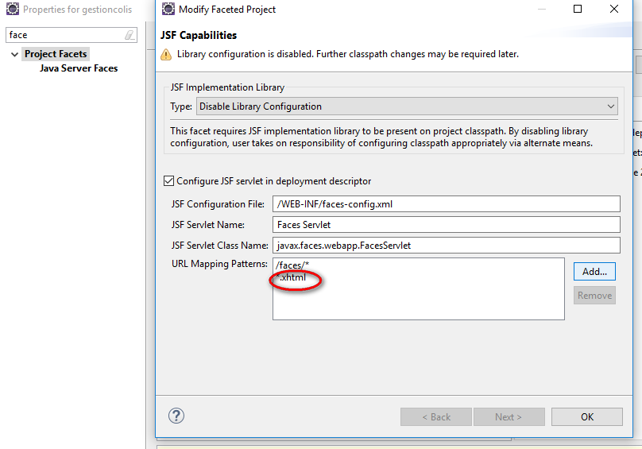

Plusieurs niveaux de logs :
Pour gérer les logs on peut utiliser l'API de Login JUL : Java Util Login
Celle-ci utilise la sortie standard
Un peu vieille
Nouvelle librairy Log4J puis Log4J2 et SLF4J qui centralise toutes les logs en seul point pour créer un pont entre toutes les api java.
Puis LogBack (implementation) plus pratique de SLF4J
Dans les prog, on utilise SLF4J.
L'utilisation de <scope> :
<scope>test</scope> ---> lors de la compilation du WAR (Web Archive) n'importe pas les librairies
L'implementation Oracles JSF : Mojara
Le JAR des Drivers doit être posé dans Glassfish
Config altEntrée
 Ajout de
Créé avec HelpNDoc Personal Edition: Création d'aide CHM, PDF, DOC et HTML d'une même source